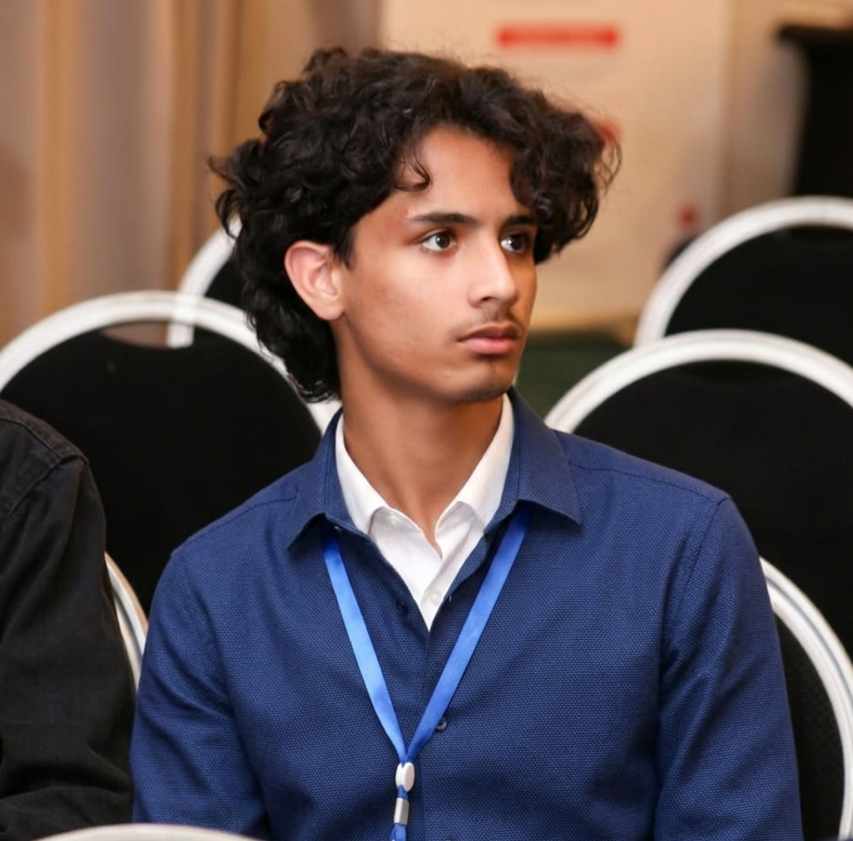
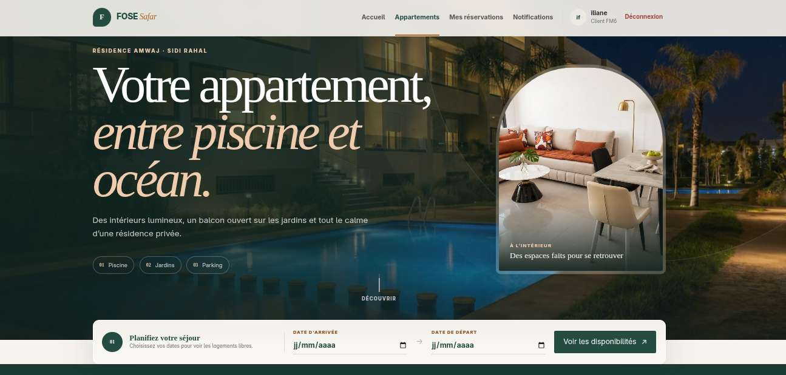
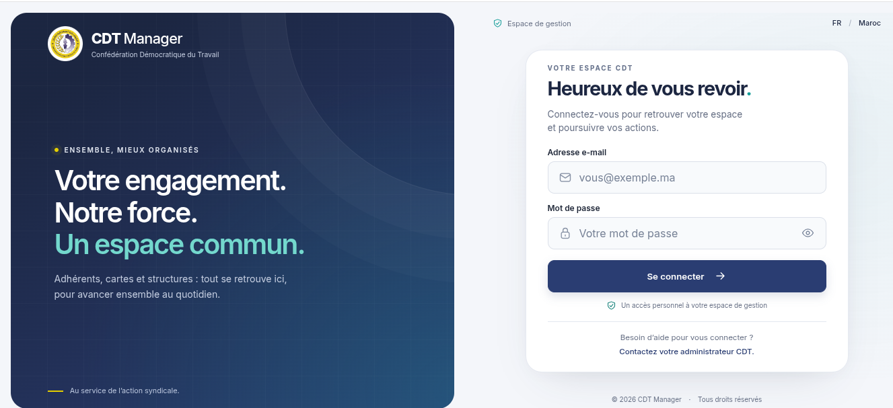
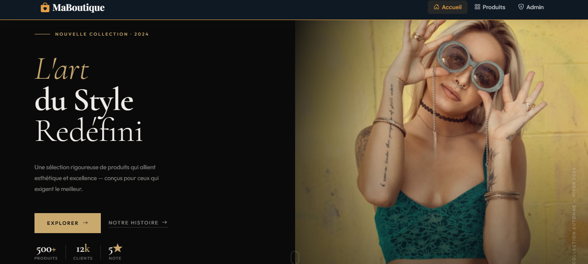
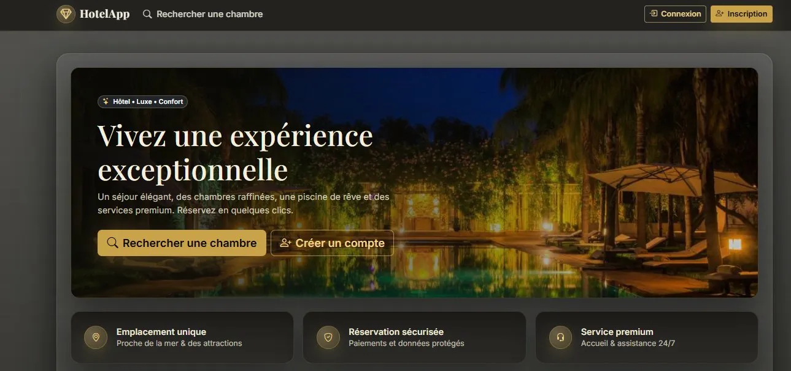

Site web vitrine
Un site moderne, responsive et rapide qui présente clairement votre activité et transforme vos visiteurs en prospects.
- Design sur mesure
- Mobile & performance
- Formulaire de contact
Je suis Iliane Firachine, développeur web à Casablanca. J'aide les entreprises, associations et indépendants à créer des sites performants et des systèmes métier qui automatisent vraiment leur quotidien.

Ce que je peux faire pour vous
De la présence en ligne à l'automatisation complète de vos processus, je construis des solutions fiables, simples à utiliser et adaptées à vos objectifs.
Un site moderne, responsive et rapide qui présente clairement votre activité et transforme vos visiteurs en prospects.
Des applications métier pour centraliser vos données, automatiser les tâches répétitives et suivre votre activité.
Une structure optimisée pour être trouvée sur Google et comprise par les nouveaux moteurs de réponse basés sur l'IA.
Je garde votre solution stable, sécurisée et à jour, avec des corrections rapides et des évolutions continues.
Un regard technique et stratégique pour cadrer votre idée, choisir les bons outils et éviter les dépenses inutiles.
J'intègre l'intelligence artificielle à vos outils pour accélérer les recherches, le support et les opérations.
Réalisations sélectionnées
Chaque projet combine une interface simple, une logique métier robuste et une base de données structurée.

01Une plateforme complète pour automatiser la réservation d'appartements, suivre chaque dossier et gérer les paiements en ligne depuis un espace centralisé.

02Un système d'information conçu pour simplifier la gestion du syndicat : adhérents, cartes, statuts, cotisations et données administratives réunis dans une seule application sécurisée.

↗E-commerce · Application web
Catalogue, panier, commande sécurisée et tableau de bord pour gérer les produits, les stocks et les ventes.

↗Réservation · Application web
Gestion des chambres, réservations et tarifs avec détection des conflits et contrôle des accès par rôle.
Ma manière de travailler
Je commence par comprendre votre métier avant de parler technologie. L'objectif : livrer une solution utile, facile à prendre en main et capable d'évoluer avec votre activité.
Télécharger mon CV ↓Nous clarifions vos besoins, vos utilisateurs et les résultats attendus.
Je transforme le besoin en parcours simples, puis en solution robuste et testée.
Mise en ligne, prise en main, maintenance et améliorations selon vos retours.
Votre idée mérite une bonne exécution
Expliquez-moi votre besoin. Je vous répondrai avec une première orientation claire sur la solution, le délai et les prochaines étapes.